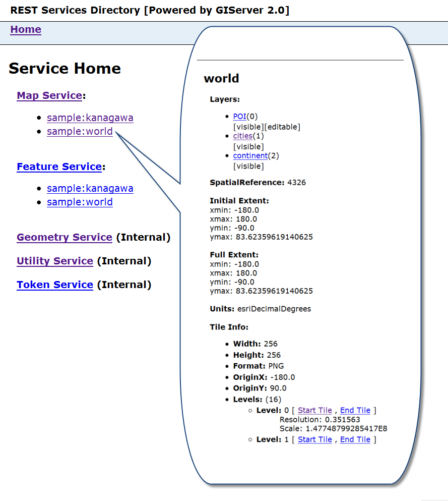
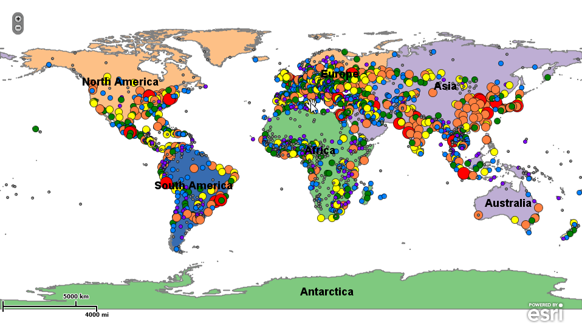
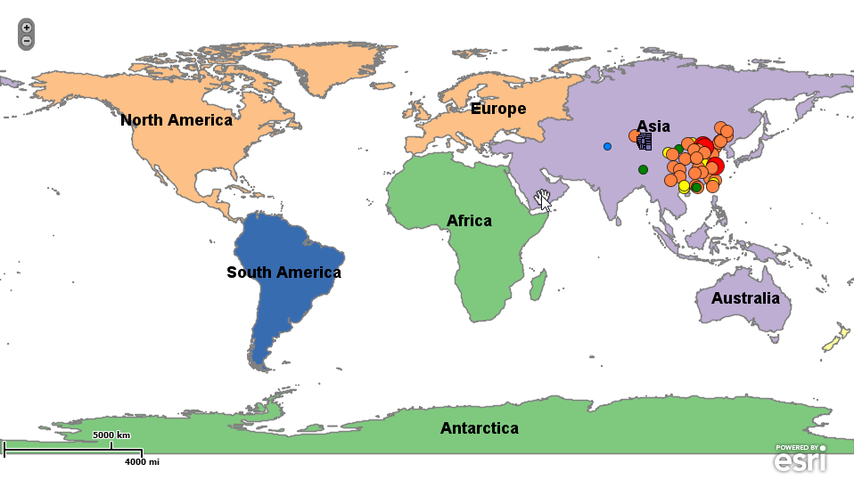
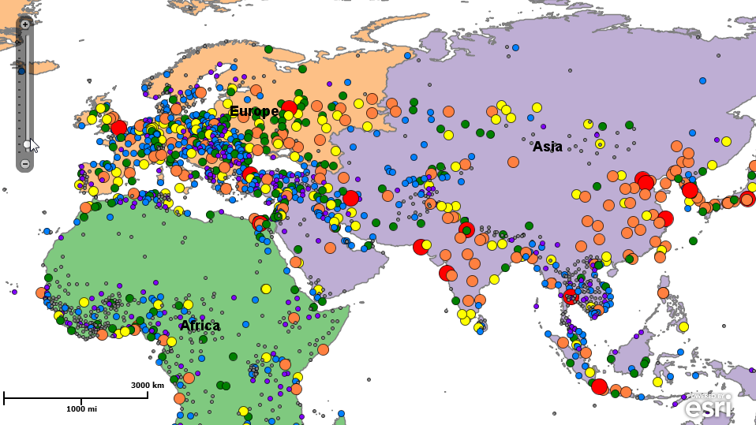
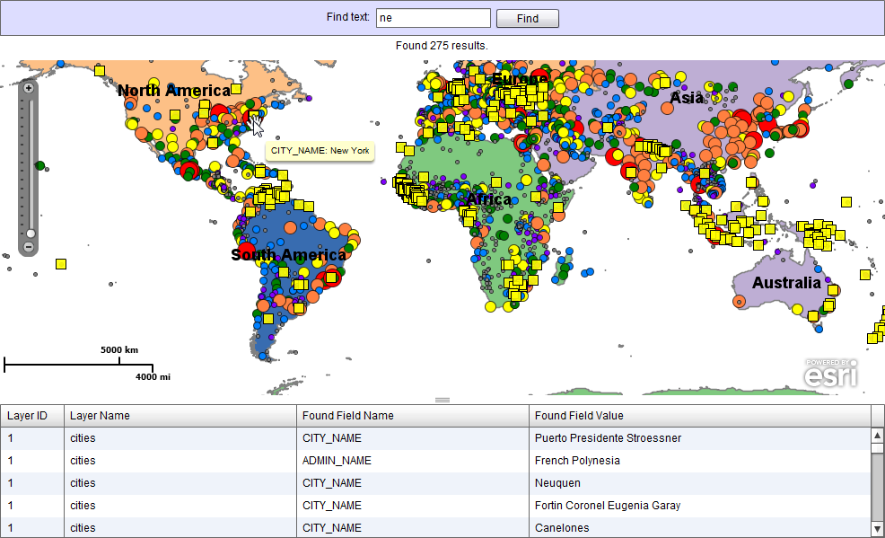
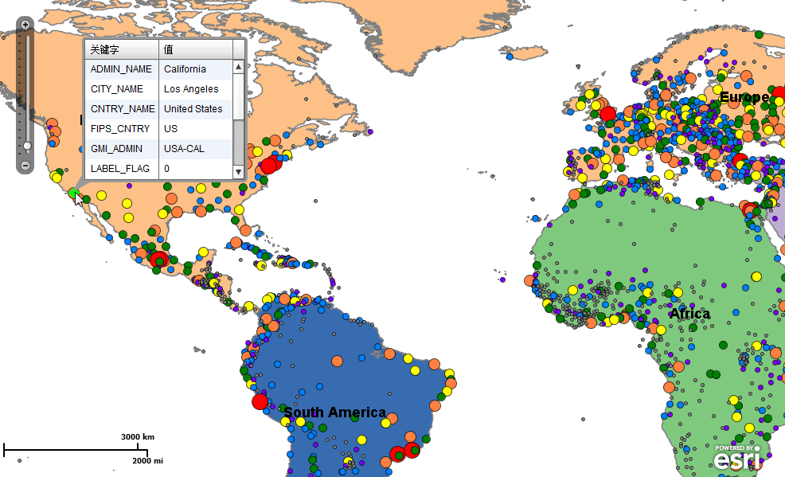

|
Map services of GIServer provide the similar interface of ArcGIS Server REST.
- Visit Services in Browser
- Visit Map Services by URL like "http://localhost:8777/giserver/rest/service/"
- 
- Using services in ArcGIS Web API
- GIServer has the similar interface like ArcGIS Server REST, so we can use ArcGIS Server Web APIs, Such as
Flex,
Silverlight,
JavaScript.
- As Flex (Sample code: sample/flex folder), we use ArcGISDynamicMapServiceLayer to use dynamic map services published by GIServer:
- 
- Using layer definetions:
- 
- Use tiled map services by ArcGISTiledMapServiceLayer:
- 
- Query and identify:
- 
- 
|
|